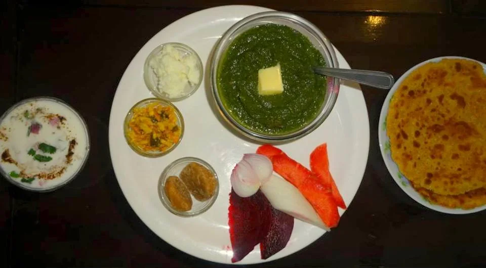

Sarson da saag & makki di roti — ਸਰ੍ਹੋਂ ਦਾ ਸਾਗ ਤੇ ਮੱਕੀ ਦੀ ਰੋਟੀ ↗
A well-known winter pairing built around mustard greens and maize flatbread. Preparation and accompaniments differ from household to household.
COLLECTION 11 · FOOD & FOODWAYS
Explore Punjabi foodways, seasonal dishes, breads, dairy traditions and the memories carried by the shared table.

11FOOD & FOODWAYS
PUNJAB HERITAGE COLLECTIONRachna23Nov · CC BY-SA 4.0 · source & licenceA LIVING TRADITION
Punjabi food is shaped by season, agriculture, household knowledge, local ingredients and migration. Recipes vary across districts, communities and families.
A well-known winter pairing built around mustard greens and maize flatbread. Preparation and accompaniments differ from household to household.
Yogurt-based drinks connected with dairy farming, summer meals and everyday refreshment.
Rich preparations made in many homes for seasonal eating, gifting and family occasions.
Methods of preserving seasonal produce through salting, oil, spices and drying.
A community meal tradition in Sikh institutions centred on seva and equality; local menus and practices vary.